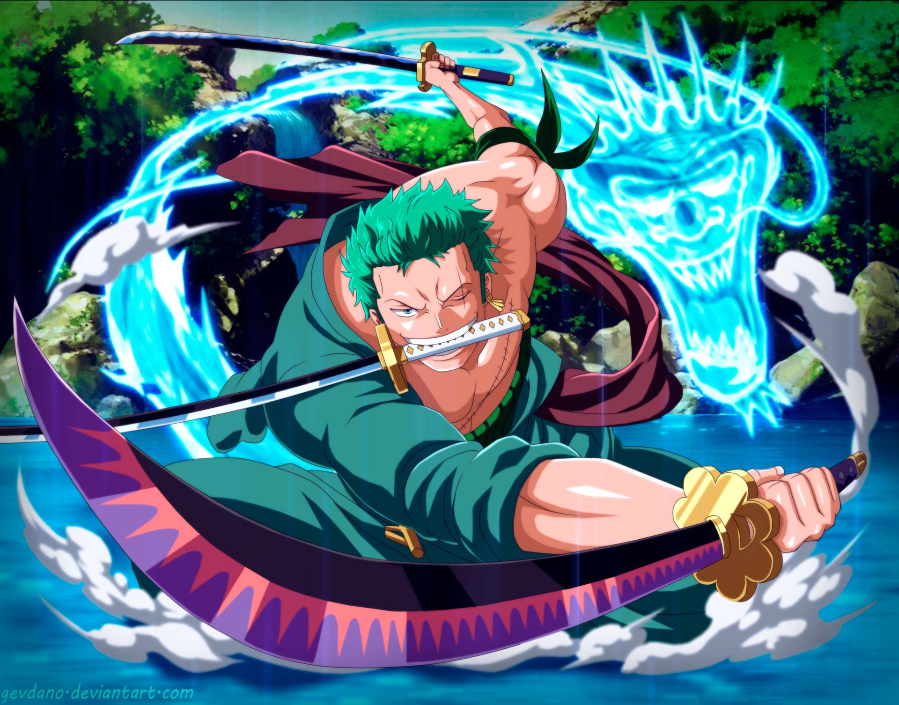

Luffy the Captain
Luffy, the Captain of the Strawhat Pirates, Luffy, is a brave and strong captain. Luffy is already one of the 4 Emperors of the Sea in New World. He aims to be the "King of the Pirates" He is the kind of captain that cares for is crewmates, that saves and defends them from their enemies.
Zoro the Swordsman
Zoro, is the Swordsman of the Strawhat Pirates, Zoro, is a disciplined and strong swordsman. Zoro aims to beat Hawkeye Mihawk in a duel to be the "World's Strongest Swordsman" He also cares for his crewmates, but for his enemies, he is one to be feared.